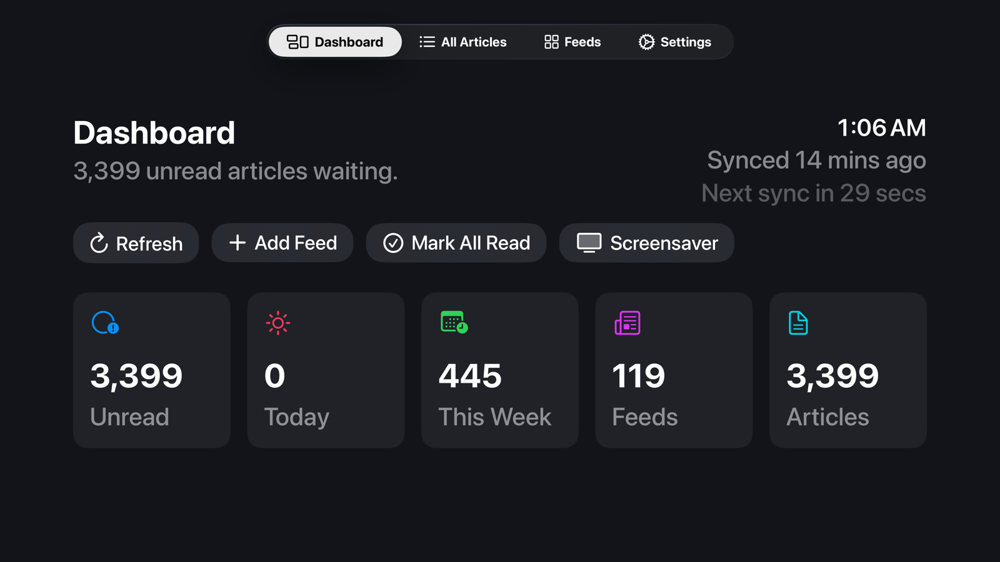
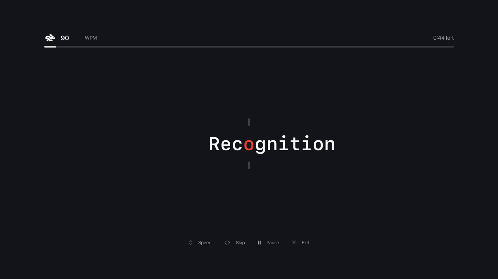
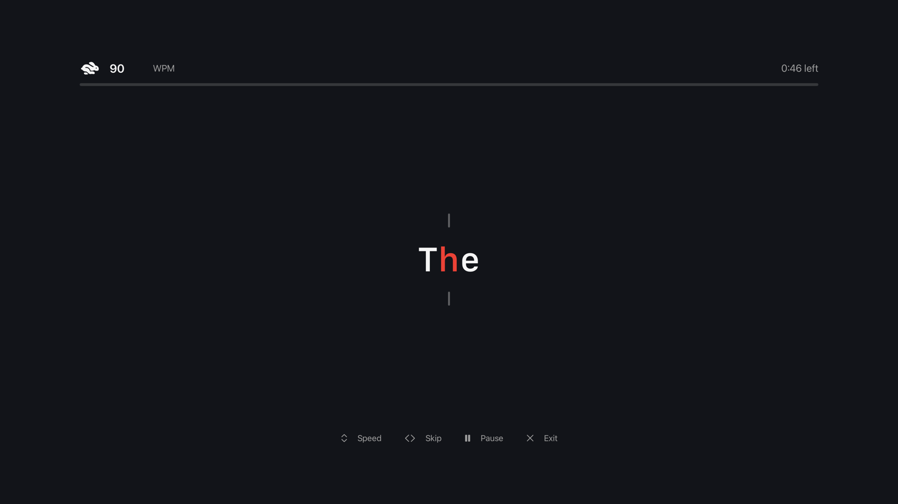
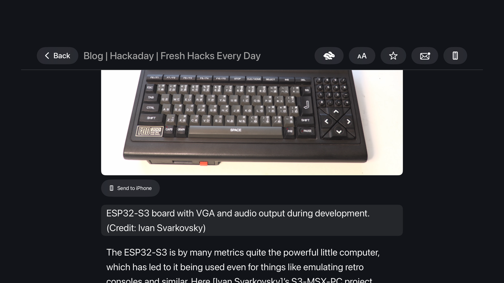
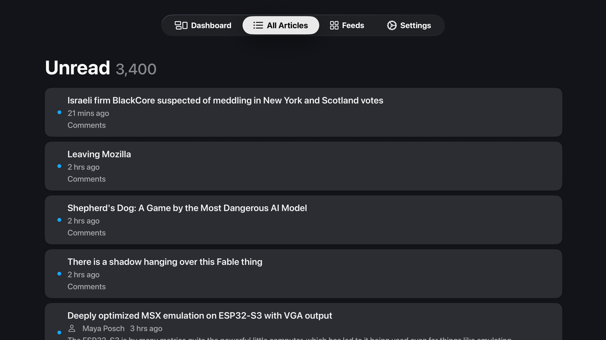

Built for Apple TV
Marquee Reader turns your Apple TV into a calm, beautiful place to follow your favorite sites — with gorgeous typography, a one-word-at-a-time speed-reading mode, and an iPhone companion to pocket anything for later.

Stream an article one word at a time with the optimal-recognition-point letter highlighted. Read faster without lifting a finger.
Every screen is designed around the Siri Remote — swipe to browse, click to read, hold to share. No keyboard gymnastics.
Your feeds live on your Apple TV. No account, no tracking, no ads — sync to your own devices through iCloud, and nothing else.


Speed Reading
Engage speed-reading mode and the article streams to the center of the screen, one word at a time. Each word's Optimal Recognition Point is highlighted in amber and pinned to a fixed reticle, so your eyes never move — the part that normally eats most of your reading time.
A reader you'll want to look at
Articles are rendered natively — headings, pull quotes, code, lists and inline images all laid out for a TV, not crammed into a web view. Pick the look that suits the room and settle in.


Always up to date
A dashboard greets you with what's unread, what arrived today, and how your feeds are doing. Marquee fetches politely in the background — honoring each feed's cache and back-off rules — so it's quietly current whenever you sit down.
Marquee for iPhone
Found something you'd rather read on the move? Send it to your iPhone in a tap. The free companion app keeps an inbox of everything you've pushed from the TV — and quietly keeps your subscriptions in sync, both ways.
Spritz-style word streaming with an ORP highlight, 100–900 WPM, and sentence seek.
Headings, quotes, code blocks, lists and images laid out for the TV — no web view.
Paste a site's address and Marquee finds the feed for you.
Bring your whole subscription list over from any other reader in one go.
Group feeds into folders and find anything with keyword search.
Four typefaces, four themes and five text sizes to match any room.
Conditional GETs, cache-control awareness and error back-off — easy on every server.
Inline images plus podcast audio and video, right inside the reader.
Rotating headlines and a clock keep the room alive while you're away.
Send articles to your phone and keep subscriptions in sync, both ways.
Your library lives on the Apple TV — no servers, no accounts.
Device-to-device sync runs on your own iCloud — private and yours.
Marquee Reader doesn't have a backend. It keeps your feeds and articles on your Apple TV, and uses your own iCloud only to talk to your iPhone. The web, the way it was meant to be — quietly yours.